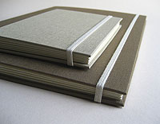
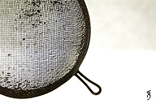
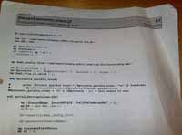

| Recurso (1) | Datos del recurso (1) | Recurso (2) | Datos del recurso (2) |
|---|---|---|---|
|
Autoría: daddo83. Licencia: CC-by-nc. Procedencia: http://www.flickr.com/photos/daddo83/3406962115/ |
Autoría: O'Reilly & Associates. Licencia: Copyright (cita). Procedencia: http://aps2.elekta.lt/Books/oreilly/java/fclass/figs/jfc_1101.gif |
||
|
Autoría: Art3mis4. Licencia: CC-by-nc-sa. Procedencia: http://www.flickr.com/photos/art3mis4/4910243349/ |
Autoría: José Javier Bermúdez Hernández. Licencia: Copyright (Cita). Procedencia: Captura de pantalla del programa Explorer, propiedad de Microsoft. |
||
|  |
Autoría: Kasaa. Licencia: CC-by-nc. Procedencia: http://www.flickr.com/photos/kasaa/2693784352/ |
 |
Autoría: Pedro Sousa. Licencia: CC-by-nc-sa. Procedencia: http://www.flickr.com/photos/pedrosousa/2355996871/ |
|
Autoría: д§mд. Licencia: CC-by-nc. Procedencia: http://www.flickr.com/photos/asmamirza/2599581983/ |
 |
Autoría: ConvenienceStoreGourmet. Licencia: CC-by. Procedencia: http://www.flickr.com/photos/conveniencestoregourmet/4873237650/ |
|
|
Autoría: Ornellaswouldgo. Licencia: CC-by. Procedencia: http://www.flickr.com/photos/ornellas/4257487503/ |
Autoría: Identity chris is. Licencia: CC-by-nc-sa. Procedencia: http://www.flickr.com/photos/identity-chris-is/71240905/ |
||
 |
Autoría: aldoaldoz. Licencia: CC-by-nc-sa. Procedencia: http://www.flickr.com/photos/aldoaldoz/3895614433/#/ |
Autoría: Danard Vicente. Licencia: CC-by. Procedencia: http://www.flickr.com/photos/danardvincente/2512148775/ |
|
|
Autoría: Fartese. Licencia: CC-by-sa. Procedencia: http://www.flickr.com/photos/fartese/4214174953/ |
Autoría: RalphTQ. Licencia: CC-by-nc. Procedencia: http://www.flickr.com/photos/ralphtq/3157588757/ |
||
|  |
Autoría: Roland. Licencia: CC-by. Procedencia: http://www.flickr.com/photos/roland/4358742850/ |
Autoría: Freddy the Boy. Licencia: CC-by. Procedencia: http://www.flickr.com/photos/freddy-click-boy/3483094014/ |
|
|
Autoría: José Javier Bermúdez Hernández. Licencia: GNU GPL v2. Procedencia: Montaje sobre Captura de pantalla del programa NetBeans, propiedad Sun Microsystems, bajo licencia GNU GPL v2. |
Autoría: Mike Baird. Licencia: CC-by. Procedencia: http://www.flickr.com/photos/mikebaird/3527406290/ |